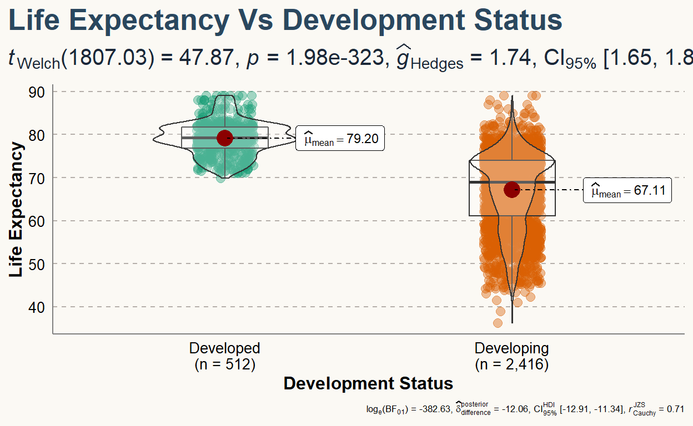
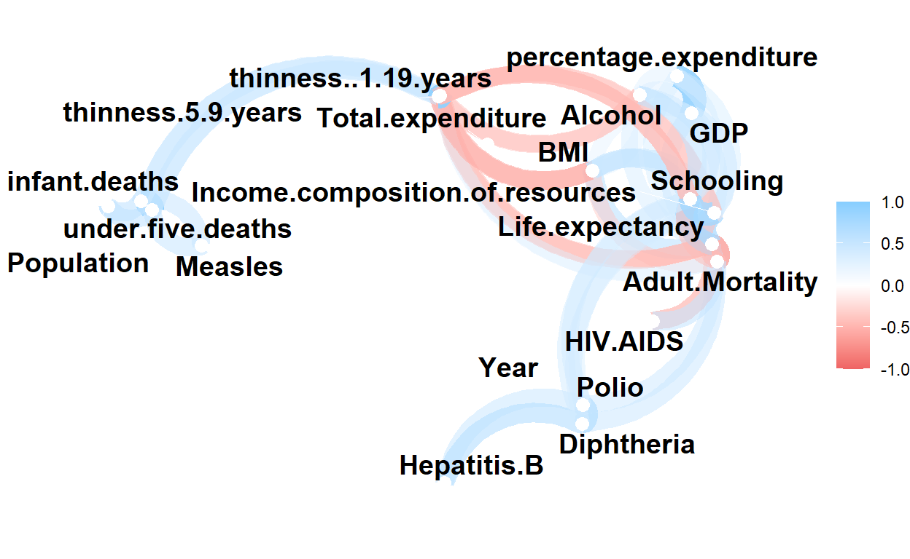

Introduction
Life expectancy is an estimate of how long a person would live on average. Throughout the years, there have been lot of studies on factors affecting life expectancy. However, these studies have not taken into account the possibility that human development index could have a significant effect. Additionally, past studies were conducted using multiple linear regressions based on world data for only one year. Therefore, there is reason to consider global data from 2000 to 2015 instead. This project relies heavily on the accuracy of the data which is provided by the Global Health Observatory (GHO) data repository under World Health Organization (WHO)\(^{(1)}\). Our goal is to determine the most significant variables to create an optimal linear regression model for predicting life expectancy. For instance, if current mortality rates in every age group remained constant throughout, then it would be an easily understood measure to which any person could directly relate \(^{(2)}\). In reality, life expectancy is affected by a variety of socioeconomic, genetic and environmental factors. Therefore, it makes for a good area of study to investigate via statistical methods to better understand the measure of life expectancy.
Loading necessary packages for the Analysis
Show code
library(hrbrthemes)
library(ggstar)
library(viridis)
library(ggExtra)
library(plotly)
library(ggstatsplot)
library(patchwork)
library(leaps)
library(gganimate)
library(tidyverse)
library(tidymodels)
library(corrr)
library(mltools)
library(ggplot2)
library(elasticnet)
library(plotly)
library(caret)
library(tidygeocoder)
library(glmnet)
library(GGally)
library(DT)
library(broom)
options(repr.plot.width = 8, repr.plot.height = 8)
library(knitr)
Loading Dataset from github
Show code
data <- read.csv("https://raw.githubusercontent.com/zackhamza01/Life-Expectancy/main/Life%20Expectancy%20Data.csv")
Exploratory Data Analysis
To begin with, we first performed some data cleaning and exploration. The exploration was very necessary for us to have a deeper understanding of the dataset before the process of gaining insights from it.
Data preview and cleaning
Table 1| Country | Year | Status | Life.expectancy | Adult.Mortality | infant.deaths | Alcohol | percentage.expenditure | Hepatitis.B | Measles | BMI | under.five.deaths | Polio | Total.expenditure | Diphtheria | HIV.AIDS | GDP | Population | thinness..1.19.years | thinness.5.9.years | Income.composition.of.resources | Schooling |
|---|---|---|---|---|---|---|---|---|---|---|---|---|---|---|---|---|---|---|---|---|---|
| Afghanistan | 2015 | Developing | 65.0 | 263 | 62 | 0.01 | 71.27962 | 65 | 1154 | 19.1 | 83 | 6 | 8.16 | 65 | 0.1 | 584.2592 | 33736494 | 17.2 | 17.3 | 0.479 | 10.1 |
| Afghanistan | 2014 | Developing | 59.9 | 271 | 64 | 0.01 | 73.52358 | 62 | 492 | 18.6 | 86 | 58 | 8.18 | 62 | 0.1 | 612.6965 | 327582 | 17.5 | 17.5 | 0.476 | 10.0 |
| Afghanistan | 2013 | Developing | 59.9 | 268 | 66 | 0.01 | 73.21924 | 64 | 430 | 18.1 | 89 | 62 | 8.13 | 64 | 0.1 | 631.7450 | 31731688 | 17.7 | 17.7 | 0.470 | 9.9 |
This dataset contains variables such as country, year, status, life expectancy, etc. The Adult.Mortality column represents the adult mortality rates of both genders, which is the probability of dying between 15 and 60 years per 1000 population. Infant.deaths showcases the number of infant deaths per 1000 population. The Alcohol column describes the total litres of consumption for pure alcohol, which is recorded per capita for ages 15 and older. The Hepatitis.B, Polio, and Diphteria variables demonstrate the percentage of immunization coverage among 1-year-olds for each of those diseases. The Measles column signifies the number of reported cases of the measles per 1000 population. thinness..1.19.years` represents the percentage of thinness present in children ranging from the age of 10 to 19 years old.
Life expectancy ranges from 44 to 89. This means that the people in the country with the highest life expectancy lived almost twice as long as the ones in the country with the lowest life expectancy.
The dataframe has 1649 rows and 20 attributes.
Variable Corelation
Categorical Variables
Comparison of mean life expectancy rate between developed and developing countries
To get an understanding of how the development status of a country is correlated with life expectancy, we compared the mean life expectancy of developed and developing countries.
Show code
cat("Table 2")
Table 2Show code
| Status | mean_expectancy |
|---|---|
| Developed | 79.19785 |
| Developing | 67.11147 |
In the table above, we saw that on average, people in developed countries lived almost a decade longer than people in developing countries.
To better vizualize the correlation between the development status of a country and Life expectancy, we created a boxplot as shown below.
Show code
#Plot showing life expectancy in different country status
plt <- ggbetweenstats(
data = data,
x = Status,
y = Life.expectancy
)
plt <- plt +
# Add labels and title
labs(
x = "Development Status",
y = "Life Expectancy",
title = "Life Expectancy Vs Development Status"
) +
# Customizations
theme(
# This is the new default font in the plot
text = element_text(family = "Roboto", size = 8, color = "black"),
plot.title = element_text(
family = "Lobster Two",
size = 20,
face = "bold",
color = "#2a475e"
),
# Statistical annotations below the main title
plot.subtitle = element_text(
family = "Roboto",
size = 15,
face = "bold",
color="#1b2838"
),
plot.title.position = "plot", # slightly different from default
axis.text = element_text(size = 10, color = "black"),
axis.title = element_text(size = 12)
)+
theme(
axis.ticks = element_blank(),
axis.line = element_line(colour = "grey50"),
panel.grid = element_line(color = "#b4aea9"),
panel.grid.minor = element_blank(),
panel.grid.major.x = element_blank(),
panel.grid.major.y = element_line(linetype = "dashed"),
panel.background = element_rect(fill = "#fbf9f4", color = "#fbf9f4"),
plot.background = element_rect(fill = "#fbf9f4", color = "#fbf9f4")
)
plt

As we can see here, there is a stark difference in the life expectancy in developing and developed countries. To begin with, the interquartile range of life expectancy is lower in developed than developing countries.The mean and median are both much higher in developed countries. The minimum life expectancy is also much lower in developing countries. Thus, we can see that the status of the country could affect life expectancy.
The next categorical variable is Country. To show this, we created a map depicting the average life expectancy in each country.
Figure 2Show code
new_data <- data #%>% na.omit()
summary_data <- new_data %>%
group_by(Country) %>%
summarize(mean=mean(Life.expectancy))
g <- list(
showframe = TRUE,
showcoastlines = TRUE,
projection = list(type = 'Mercator')
)
plot <- plot_geo(summary_data, locationmode="country names")%>%
add_trace(locations=~Country,
z=~mean,
color=~mean) %>%
layout(
title = with(summary_data, paste('Mean Life Expectancy')),
geo = g
)
plot
Show code
#htmlwidgets::saveWidget(plot, "plot2.html")
#IRdisplay::display_html(sprintf('<iframe src="plot2.html" height=%d width=%d></iframe>', 600, 900))
Here we see that sub-saharan african countries are amongst the lowest life expectancy regions while Canada, Europe and Australia amongst the highest.
Continuous Variables
To demonstrate the correlation between continuous variables and life expectancy, we created a correlation map.
HIV.AIDS VS life.expectancyShow code
p<- data %>%
ggplot()+
geom_point(aes(HIV.AIDS, Life.expectancy, alpha=0.5,color=Status)) +
geom_smooth(aes(HIV.AIDS, Life.expectancy))+
labs(x="Deaths per 1000 births from AIDS", Y="Life expectancy")+
theme(legend.position = "none")
ggMarginal(p, type="histogram", fill="slateblue")

Show code
p2<- data %>%
ggplot()+
geom_point(aes(Income.composition.of.resources, Life.expectancy,
color=Country,
fill=Status,alpha=0.01, size= GDP), shape=21)+
scale_size(range=c(.1, 6))+
scale_fill_viridis(discrete=TRUE, guide=FALSE, option="A") +
theme_ipsum() +
theme(legend.position="bottom") +
ylab("Life Expectancy") +
xlab("Income Composition") +
theme(legend.position = "none")
ggMarginal(p2, type="density", fill="grey")

Show code
p3 <- data %>%
ggplot()+
geom_star(aes(Income.composition.of.resources, Adult.Mortality,
color=Country,
fill=Status,alpha=0.5, size= GDP), shape=21)+
scale_size(range=c(.1, 15))+
scale_fill_viridis(discrete=TRUE, guide=FALSE, option="A") +
theme_ipsum() +
theme(legend.position="bottom") +
ylab("Adult Mortality") +
xlab("Income Composition") +
theme(legend.position = "none")
p3+
transition_time(Year)+
labs(title = "Year: {frame_time}")

Show code
correl<- corrr::correlate(data %>% select_if(is.numeric)) %>% network_plot()
correl

Show code

Observations
- The variables that life expectancy is most positively related are: schooling, and income composition of resources.
- The variables most negatively associated with life expectancy are: adult mortality and HIV/AIDS.
- Life expectancy has a negligible relationship with Population, Total expenditure, under-five deaths and Measles.
- From the above observations, we would expect to see schooling, income composition of resources, adult mortality, and HIV/AIDS to have the largest impact in our linear model while Population, Total expenditure, under-five deaths and Measles are expected to have a smaller impact in the linear model.
Variable Selection
Preparing the data
Our first step is to ensure all of our variables can be used in the regression and then splitting the dataset into testing and training sets. For this study, we will be using a proportion of 0.75. We will not be using the Country and Year categories in this model as our aim is to predict the life expectancy based on factors that are more general and not specific to a place or time. Furthermore, the Country variable has over 150 levels, which will make our model extremely large.
Show code
data <- data %>%
select(-Country) %>%
select(-Year) %>%
mutate(Status = if_else(Status == "Developing", 0, 1)) %>%
na.omit()
data$Status <- as.factor(data$Status)
#splitting data into testing and training sets
set.seed(123)
initial_split <- initial_split(data, prop = 0.75)
expectancy_train <- training(initial_split)
expectancy_test <- testing(initial_split)
cat("Table 3")
Table 3| Status | Life.expectancy | Adult.Mortality | infant.deaths | Alcohol | percentage.expenditure | Hepatitis.B | Measles | BMI | under.five.deaths | Polio | Total.expenditure | Diphtheria | HIV.AIDS | GDP | Population | thinness..1.19.years | thinness.5.9.years | Income.composition.of.resources | Schooling | |
|---|---|---|---|---|---|---|---|---|---|---|---|---|---|---|---|---|---|---|---|---|
| 676 | 1 | 81.0 | 54 | 0 | 9.04 | 212.08593 | 96 | 0 | 59.2 | 0 | 99 | 7.46 | 99 | 0.1 | 2797.967 | 1143896 | 0.9 | 1.0 | 0.850 | 13.8 |
| 799 | 0 | 74.4 | 151 | 8 | 3.69 | 18.26183 | 82 | 0 | 45.8 | 10 | 97 | 6.46 | 87 | 0.3 | 244.469 | 1328961 | 1.5 | 1.4 | 0.679 | 12.6 |
Show code
cat("Table 4")
Table 4| Status | Life.expectancy | Adult.Mortality | infant.deaths | Alcohol | percentage.expenditure | Hepatitis.B | Measles | BMI | under.five.deaths | Polio | Total.expenditure | Diphtheria | HIV.AIDS | GDP | Population | thinness..1.19.years | thinness.5.9.years | Income.composition.of.resources | Schooling | |
|---|---|---|---|---|---|---|---|---|---|---|---|---|---|---|---|---|---|---|---|---|
| 3 | 0 | 59.9 | 268 | 66 | 0.01 | 73.21924 | 64 | 430 | 18.1 | 89 | 62 | 8.13 | 64 | 0.1 | 631.7450 | 31731688 | 17.7 | 17.7 | 0.470 | 9.9 |
| 7 | 0 | 58.6 | 281 | 77 | 0.01 | 56.76222 | 63 | 2861 | 16.2 | 106 | 63 | 9.42 | 63 | 0.1 | 445.8933 | 284331 | 18.6 | 18.7 | 0.434 | 8.9 |
Backward Selection
We will now be performing variable selection using regsubsets. Our nvmax is 19 as there are 19 remaining variables in the dataset.
Table 5Show code
#Variable selection
backward_sel <- regsubsets(x=Life.expectancy ~.,data= expectancy_train, nvmax=19, method="backward")
#backward_sel
back_summary <- summary(backward_sel)
back_summary_df <- data.frame(
RSQ = back_summary$rsq,
RSS = back_summary$rss,
ADJ.R2 = back_summary$adjr2,
BIC = back_summary$bic
)
back_summary_df %>% head() %>% knitr::kable()
| RSQ | RSS | ADJ.R2 | BIC |
|---|---|---|---|
| 0.5177821 | 46475.58 | 0.5173913 | -887.2486 |
| 0.7279422 | 26220.60 | 0.7275009 | -1587.5926 |
| 0.7898490 | 20254.10 | 0.7893372 | -1899.5934 |
| 0.8105975 | 18254.38 | 0.8099821 | -2020.9589 |
| 0.8145800 | 17870.55 | 0.8138263 | -2040.1052 |
| 0.8249509 | 16871.02 | 0.8240963 | -2104.1260 |
Show code
The best number of predictors to be selected is 12Show code
cat("\nTable 6")
Table 6| n_input_variables | C_p |
|---|---|
| 1 | 2404.139354 |
| 2 | 821.437844 |
| 3 | 356.633125 |
| 4 | 202.179470 |
| 5 | 174.149690 |
| 6 | 97.948598 |
| 7 | 50.986642 |
| 8 | 19.934640 |
| 9 | 13.454595 |
| 10 | 11.985773 |
| 11 | 11.468809 |
| 12 | 9.988715 |
| 13 | 10.121462 |
| 14 | 11.148805 |
| 15 | 12.691486 |
| 16 | 14.287013 |
| 17 | 16.079369 |
| 18 | 18.017771 |
| 19 | 20.000000 |
Show code
plot(back_summary$cp,
main = "Cp for Backward Method using a Training Set",
xlab = "Number of Input Variables", ylab = "Cp", type = "b", pch = 19,
col = "red")
The results of our backward selection tell us that the model with 12 variables is the best model, as it has the lowest \(C_p\) of 9.988715.
|
The 12 variables include: Status, Adult.Mortality, infant.deaths, percentage.expenditure, BMI, under.five.deaths, Diphtheria, HIV.AIDS, thinness.5.9.years, Income.composition.of.resources, Schooling and Alcohol.
Observations
- Polio and Hepatitis B are not included in this model while Diphtheria is. This suggests that Diphtheria affects life expectancy more than the other two diseases, which could be due to the fact that Diphtheria is more fatal in children (fatality rate is 5-10%, while Polios is 2-5% and Hepatitis B s is around 0.42 per 100000 population).
- Thinness 5-9 years is selected, but not thinness 10-19 years. This could be due to the fact that thinness and malnutrition during childhood may lead to people dying earlier, and so it has a larger impact on life expectancy and was thus included in the model.
- While Status and percentage expenditure both impact life expectancy, GDP and total expenditure do not. This makes sense as GDP and total expenditure are both absolute measures, and do not consider population of a country, while percentage expenditure takes into account the differences between population and cost of living in different areas.
Forward Selection
Using the same methods, we will now be performing forward selection.
Table 7
Show code
### Forward selection
forward_sel <- regsubsets(x=Life.expectancy ~.,data= expectancy_train, nvmax=19, method="forward")
forward_summary <- summary(forward_sel)
forward_summary_df <- data.frame(
RSQ = forward_summary$rsq,
RSS = forward_summary$rss,
ADJ.R2 = forward_summary$adjr2,
BIC = forward_summary$bic
)
forward_summary_df %>% head() %>% knitr::kable()
| RSQ | RSS | ADJ.R2 | BIC |
|---|---|---|---|
| 0.5177821 | 46475.58 | 0.5173913 | -887.2486 |
| 0.7279422 | 26220.60 | 0.7275009 | -1587.5926 |
| 0.7898490 | 20254.10 | 0.7893372 | -1899.5934 |
| 0.8105975 | 18254.38 | 0.8099821 | -2020.9589 |
| 0.8161367 | 17720.52 | 0.8153893 | -2050.5256 |
| 0.8216015 | 17193.83 | 0.8207306 | -2080.6997 |
Table 8
Show code
The best number of predictors to be selected is 12| n_input_variables | C_p |
|---|---|
| 1 | 2404.139354 |
| 2 | 821.437844 |
| 3 | 356.633125 |
| 4 | 202.179470 |
| 5 | 162.411842 |
| 6 | 123.204489 |
| 7 | 106.087435 |
| 8 | 19.934640 |
| 9 | 13.454595 |
| 10 | 11.985773 |
| 11 | 11.468809 |
| 12 | 9.988715 |
| 13 | 10.121462 |
| 14 | 11.148805 |
| 15 | 12.691486 |
| 16 | 14.287013 |
| 17 | 16.079369 |
| 18 | 18.017771 |
| 19 | 20.000000 |
Show code
plot(forward_summary$cp,
main = "Cp for Forward Method using a Training Set",
xlab = "Number of Input Variables", ylab = "Cp", type = "b", pch = 19,
col = "red")
The model size we get is the same for both forward and backward selection, and contains the same variables. Due to multicollinearity, we will be removing the Schooling and infant.deaths from our model. The covariates we will be using are listed below as stepwise_selection.
Show code
| x |
|---|
| Status |
| Life.expectancy |
| Adult.Mortality |
| Alcohol |
| percentage.expenditure |
| BMI |
| under.five.deaths |
| Diphtheria |
| HIV.AIDS |
| thinness.5.9.years |
| Income.composition.of.resources |
Below, we can find our model, and the summary of our model.
Show code
| term | estimate | std.error | statistic | p.value | conf.low | conf.high |
|---|---|---|---|---|---|---|
| (Intercept) | 58.5126455 | 0.7554403 | 77.4550272 | 0.0000000 | 57.0305454 | 59.9947456 |
| Status1 | 1.2412777 | 0.4297390 | 2.8884455 | 0.0039396 | 0.3981717 | 2.0843837 |
| Adult.Mortality | -0.0206131 | 0.0011753 | -17.5392368 | 0.0000000 | -0.0229188 | -0.0183073 |
| percentage.expenditure | 0.0004885 | 0.0000771 | 6.3324696 | 0.0000000 | 0.0003371 | 0.0006398 |
| BMI | 0.0570020 | 0.0074777 | 7.6229339 | 0.0000000 | 0.0423315 | 0.0716725 |
| under.five.deaths | -0.0027101 | 0.0007291 | -3.7169385 | 0.0002108 | -0.0041405 | -0.0012796 |
| Diphtheria | 0.0274355 | 0.0054988 | 4.9893188 | 0.0000007 | 0.0166473 | 0.0382236 |
| Alcohol | -0.0119317 | 0.0395812 | -0.3014486 | 0.7631236 | -0.0895861 | 0.0657227 |
| HIV.AIDS | -0.4122371 | 0.0211421 | -19.4983807 | 0.0000000 | -0.4537159 | -0.3707584 |
| thinness.5.9.years | -0.0340371 | 0.0330401 | -1.0301765 | 0.3031305 | -0.0988585 | 0.0307843 |
| Income.composition.of.resources | 16.5937484 | 0.8900820 | 18.6429444 | 0.0000000 | 14.8474945 | 18.3400023 |
Show code
MLR_expectancy_2 <- lm(Life.expectancy ~ Status + Adult.Mortality + percentage.expenditure
+ BMI + under.five.deaths + Diphtheria + Alcohol +
HIV.AIDS + thinness.5.9.years + Income.composition.of.resources +
infant.deaths + Schooling, data = expectancy_train)
tidy(MLR_expectancy_2, conf.int=TRUE) %>% knitr::kable()
| term | estimate | std.error | statistic | p.value | conf.low | conf.high |
|---|---|---|---|---|---|---|
| (Intercept) | 54.6706112 | 0.7911543 | 69.102340 | 0.0000000 | 53.1184413 | 56.2227812 |
| Status1 | 0.7342522 | 0.3916697 | 1.874672 | 0.0610761 | -0.0341668 | 1.5026712 |
| Adult.Mortality | -0.0177494 | 0.0010812 | -16.415941 | 0.0000000 | -0.0198707 | -0.0156281 |
| percentage.expenditure | 0.0004508 | 0.0000701 | 6.431575 | 0.0000000 | 0.0003133 | 0.0005883 |
| BMI | 0.0339693 | 0.0069625 | 4.878866 | 0.0000012 | 0.0203095 | 0.0476292 |
| under.five.deaths | -0.0749374 | 0.0084056 | -8.915167 | 0.0000000 | -0.0914284 | -0.0584464 |
| Diphtheria | 0.0128051 | 0.0050786 | 2.521364 | 0.0118163 | 0.0028413 | 0.0227689 |
| Alcohol | -0.0814556 | 0.0375585 | -2.168764 | 0.0302928 | -0.1551419 | -0.0077693 |
| HIV.AIDS | -0.4153210 | 0.0191870 | -21.645997 | 0.0000000 | -0.4529641 | -0.3776780 |
| thinness.5.9.years | -0.0626015 | 0.0301367 | -2.077252 | 0.0379866 | -0.1217268 | -0.0034762 |
| Income.composition.of.resources | 9.2798242 | 0.9431914 | 9.838750 | 0.0000000 | 7.4293717 | 11.1302768 |
| infant.deaths | 0.0986923 | 0.0113129 | 8.723857 | 0.0000000 | 0.0764974 | 0.1208871 |
| Schooling | 0.8770596 | 0.0667411 | 13.141222 | 0.0000000 | 0.7461199 | 1.0079994 |
Analysing The Effect Of Multicollinearity
From the correlation matrix above, we know that the pair of Schooling and Income.composition.of.resources as well as the pair under.five.deaths and infant.deaths are highly correlated. The first model MLR_expectancy adjusts for this by removing one variable each from both correlated pairs while MLR_expectancy_2 does not. The impact of not adjusting the model is a decrease in the magnitude of the coefficient estimate which is caused by the newly added correlated variable taking away some of its significance. In our models: \(\\\\\) Income.composition.of.resources : 16.6 (without)
Income.composition.of.resources: 9.28 (with)
under.five.deaths: -2.710e-03 (without)
under.five.deaths: -7.494e-02 (with)
Therefore, it is not ideal to include correlated covariates Schooling and infant.deaths in the model.
Below, we also do forward selection for interactive models, which we put a nvmax of 189 as those are the maximum number of interactions we can get.
Show code
forward_int_sel <- regsubsets(x=Life.expectancy ~. ^2,data= expectancy_train, nvmax = 189, method="forward")
Reordering variables and trying again:Show code
| x |
|---|
| 105.696 |
As shown, the lowest \(C_p\) for the forward selection models with interaction are much higher than the ones for the additive models. This suggests that the models with interaction may not be as good as that without, and as there are an incredibly large number of variables, we will not be doing any interactive models.
LASSO Model Selection
We will now be using LASSO to further see what model is the best when all the covariates are included. Below, we use cv.glmnet to find the smallest lambda to further create a model and do analysis.
Show code
Figure 6Show code
plot(cv_lambda_LASSO, main = "Lambda selection by CV with LASSO\n\n")
Figure 7The smallest lambda we found from LASSO is 0.00136.
Ridge Model Selection
We will also be using ridge as a model selection method. Below, we perform ridge and find the smallest lambda for our models.
Figure 8Show code
cv_lambda_RIDGE <- cv.glmnet(
x = as.matrix(expectancy_train[,-c(1,2)]), y = as.matrix(expectancy_train[,2]),
alpha = 0,
lambda = exp(seq(-12, 10, 0.3)),
family = 'poisson'
)
lambda_min_MSE_RIDGE <- round(cv_lambda_RIDGE$lambda.min, 5)
plot(cv_lambda_RIDGE, main = "Lambda selection by CV with RIDGE\n\n")
Figure 9Show code
lambda_min_MSE_RIDGE
[1] 0.00335Cross-Validation
We will now be performing cross-validation to test our predictive model. Below, we have a few different models. - model_5CV and model_holdout are the cross-validation with 5 folds and holdout models respectively built using the stepwise covariates found through the variable selection methods. - model_lasso_cv and model_lasso_holdout are the cross validation with 5 fold and holdout models built using lasso for the cross validation and the lambda found from LASSO for the holdout model. - model_ridge_cv and model_ridge_holdout are the cross validation with 5 fold and holdout models built using ridge for the cross validation and the lambda found from ridge for the holdout model. - Lastly, model_elastic is the cross validation done for 5-fold using the elastic method.
Show code
set.seed(123)
lambda <- 10^seq(-3, 3, length = 100)
# define training control
train_control <- trainControl(method="cv", number = 5)
# train the models
#5 fold CV using stepwise covariates
model_5CV <- train(Life.expectancy~., data = expectancy_train[,stepwise_selection],
trControl=train_control, method="lm", preProcess = c("center", "scale"))
#stepwise covariates lm holdout
model_holdout <- lm(Life.expectancy~., data = expectancy_train[,stepwise_selection])
#lasso with CV
model_lasso_cv <- train(Life.expectancy~., data = expectancy_train[,-1],
trControl=train_control, method="glmnet", preProcess = c("center", "scale"),tuneGrid = expand.grid(alpha = 1, lambda = lambda))
#ridge with CV
model_ridge_cv <- train(Life.expectancy~., data = expectancy_train[,-1],
trControl=train_control, method="glmnet", preProcess = c("center", "scale"),tuneGrid = expand.grid(alpha = 0, lambda = lambda))
#lasso holdout
model_lasso_holdout <- glmnet(
x = as.matrix(expectancy_train[,-c(1,2)]), y = as.matrix(expectancy_train[,2]),
alpha = 1,
lambda = lambda_min_MSE_LASSO
)
#ridge holdout
model_ridge_holdout <- glmnet(
x = as.matrix(expectancy_train[,-c(1,2)]), y = as.matrix(expectancy_train[,2]),
alpha = 0,
lambda = lambda_min_MSE_RIDGE
)
#elastic cv
model_elastic <- train(
Life.expectancy ~., data = expectancy_train[,-1], method = "glmnet",
preProcess = c("center", "scale"),
trControl = train_control,
tuneLength = 10
)
In order to test which model is the best, we will be finding the RMSEs of the models and comparing.
Show code
holdout.prediction <- predict(model_holdout, newdata = expectancy_test[,-2])
holdout.rmse <- rmse(
preds = holdout.prediction,
actuals = expectancy_test$Life.expectancy)
model.5CV.pred <- predict(model_5CV, newdata = expectancy_test[,-2])
model.5CV.rmse <- rmse(
preds = model.5CV.pred,
actuals = expectancy_test$Life.expectancy)
lasso.holdout.pred <- predict(model_lasso_holdout, newx = as.matrix(expectancy_test[,-c(1,2)]))
lasso.cv.pred <- predict(model_lasso_cv, newx = as.matrix(expectancy_test[,-c(1,2)]))
ridge.holdout.pred <- predict(model_ridge_holdout, newx = as.matrix(expectancy_test[,-c(1,2)]))
lasso.cv.pred <- predict(model_lasso_cv, model.matrix(Life.expectancy ~., expectancy_test)[,-c(1,2)])
lasso.cv.rmse <- rmse(lasso.cv.pred,expectancy_test$Life.expectancy)
ridge.cv.pred <- predict(model_ridge_cv, model.matrix(Life.expectancy ~., expectancy_test)[,-c(1,2)])
ridge.cv.rmse <- rmse(ridge.cv.pred,expectancy_test$Life.expectancy)
elastic.cv.pred <- predict(model_elastic, model.matrix(Life.expectancy ~., expectancy_test)[,-c(1,2)])
elastic.cv.rmse <- rmse(elastic.cv.pred,expectancy_test$Life.expectancy)
holdout.lasso.rmse <- rmse(
preds = lasso.holdout.pred,
actuals = expectancy_test$Life.expectancy)
holdout.ridge.rmse <- rmse(
preds = ridge.holdout.pred,
actuals = expectancy_test$Life.expectancy)
RMSE <- tibble(
Method = "LM Hold-out",
RMSE = holdout.rmse)
RMSE <- rbind(RMSE,tibble(
Method = "5 fold LM CV",
RMSE = model.5CV.rmse))
RMSE <- rbind(RMSE,tibble(
Method = "LASSO CV",
RMSE = lasso.cv.rmse))
RMSE <- rbind(RMSE,tibble(
Method = "RIDGE CV",
RMSE = ridge.cv.rmse))
RMSE <- rbind(RMSE,tibble(
Method = "Elastic CV",
RMSE = elastic.cv.rmse))
RMSE <- rbind(RMSE, tibble(
Method = "LASSO Hold-out",
RMSE = holdout.lasso.rmse))
RMSE <- rbind(RMSE, tibble(
Method = "RIDGE Hold-out",
RMSE = holdout.ridge.rmse))
RMSE %>% knitr::kable()
| Method | RMSE |
|---|---|
| LM Hold-out | 3.919471 |
| 5 fold LM CV | 3.919471 |
| LASSO CV | 3.664512 |
| RIDGE CV | 3.720795 |
| Elastic CV | 3.663028 |
| LASSO Hold-out | 3.667097 |
| RIDGE Hold-out | 3.663632 |
We can see that the model with the lowest RMSE is the elastic model with an RMSE of 3.663029. The coefficients for this model can be found below.
Show code
coef(model_elastic$finalModel, model_elastic$bestTune$lambda)
19 x 1 sparse Matrix of class "dgCMatrix"
s1
(Intercept) 69.10258900
Adult.Mortality -2.30326426
infant.deaths 10.27596986
Alcohol -0.28613317
percentage.expenditure 0.62442166
Hepatitis.B -0.06411130
Measles -0.04012417
BMI 0.66222164
under.five.deaths -10.55426961
Polio 0.27901943
Total.expenditure 0.14502042
Diphtheria 0.18339641
HIV.AIDS -2.68744580
GDP 0.19137946
Population 0.02274985
thinness..1.19.years -0.02926623
thinness.5.9.years -0.24398017
Income.composition.of.resources 1.74121425
Schooling 2.42970613This model is a convex combination of Ridge and LASSO. The equation to understand the alpha for this elastic model is \(\alpha \times LASSO + (1-\alpha) \times RIDGE\), which combines the L1 and L2 norms.
Observations
- The most important variables we get from this are under five deaths, infant deaths, HIV/AIDS, Adult mortality, Income composition of variables, BMI and percentage expenditure.
- Population, thinness, Measles, Hepatitis B and total expenditure are less important.
- Alcohol and Polio are right in the middle of the variable importance graph.
Discussion
Results and impacts
In our study we used variable selection methods (both forward and backward) to find that the best model is the one with 12 covariates. From there, we used those covariates to create cross-validation models with 5-fold and holdout models. Additionally, we performed LASSO and ridge and created 5-fold cross validation and hold-out models for the two. The last type of model we did was an elastic cross-validation model. We discovered by comparing RMSE that the best model is the elastic cross-validation, and thus found the coefficients for the specific model. Our findings help us see the best model in predicting life expectancy, thus also allowing us to see which factors affect life expectancy the most. Our analysis showed us that Under-five deaths, infant deaths, HIV/AIDS, Adult Mortality, Schooling and income composition of resources are the factors that affect life expectancy the most.
Are the results what we expected?
- It is unsurprising that a disease such as HIV/AIDS affect life expectancy. One could question why Measles was not equally as important, but a reason for this could be that there is a vaccine which is quite widespread, and so the disease is not as impactful anymore.
- Similarly, infant deaths, under five deaths and adult mortality being the most important are also what we expected, as they directly involve life expectancy.
- Our variable selection methods suggest that Alcohol is an important aspect of our model, but the Important variables for our best model seem to suggest otherwise. We would expect Alcohol to be higher up on the important variables graph.
Improvements that could be made
- This study only takes into account additive models, and so, we are not able to explore the relationship between variables in the model. While we showed that the \(C_p\) is much higher with interactions, our model could be improved using interactions, so there is further room for improvement here.
Future questions/research
Our results with this study hae allowed us to see the factors affecting life expectancy and the best way to predict life expectancy in any random country. In the future, this study could lead to questions about: - How can governments help in increasing life expectancy and what areas should they be focusing on specifically? - The data in this study predates Covid-19. How much does Covid-19 affect life expectancy and how much would it change our model? - As mentioned above, the data in this study is from 2000 - 2015. There have been multiple advancements in the medical field since then. Further, 15 years is also a long period of time. It would be interesting to explore how for different and shorter periods of time how life expectancy changes and how its changed over time.
References
\(^{(1)}\) World Health Organisation (WHO). (2018, February 10). Life expectancy (WHO). Kaggle. Retrieved November 6, 2021, from https://www.kaggle.com/kumarajarshi/life-expectancy-who.
\(^{(2)}\) Tier 1-life expectancy and wellbeing-1.19 life expectancy at birth. Department of Health | Tier 1-Life expectancy and wellbeing-1.19 Life expectancy at birth. (n.d.). Retrieved November 6, 2021, from https://www1.health.gov.au/internet/publications/publishing.nsf/Content/oatsih-hpf-2012-toc~tier1~life-exp-wellb~119.
National Progress Report 2025 Goal: Reduce HBV Deaths. (2021, June 03). Retrieved from https://www.cdc.gov/hepatitis/policy/NPR/2021/NationalProgressReport-HepB-ReduceDeaths.htm
Clinical Features of Diphtheria. (2020, May 26). Retrieved from https://www.cdc.gov/diphtheria/clinicians.html